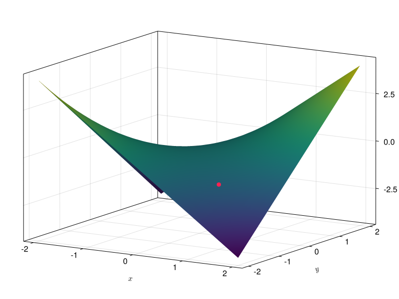

10 Derivadas de funciones de varias variables
Ejercicio 10.1 Emparejar las siguientes funciones de dos variables con sus curvas de nivel.
\(f(x,y) = \cos(x)\operatorname{sen}(y)\)
\(g(x,y) = xy\)
\(h(x,y) = 2x+y\)
\(i(x,y) = 3x^2 + y^2\)
La gráfica A corresponde a \(i(x,y)\).
La gráfica B corresponde a \(g(x,y)\).
La gráfica C corresponde a \(f(x,y)\).
La gráfica D corresponde a \(h(x,y)\).
Ejercicio 10.2 La ecuación de los gases perfectos relaciona la presión, el volumen y la temperatura de un gas perfecto. Esta ecuación se suele escribir de la forma
\[ PV = nRT \]
donde \(P\) es la presión, \(V\) es el volumne, \(T\) la temperatura, \(R\) es la constante universal de los gases perfectos y \(n\) es el número de moles del gas, que también es constante para cada gas.
¿Cómo varía la presión de un gas perfecto cuando se aumenta la temperatura, manteniendo constante el volumen?
¿Cómo varía la presión de un gas perfecto cuando se aumenta el volumen, manteniendo constante la temperatura?
Podemos expresar la presión en función del volumen y la temperatura del gas perfecto mediante la función \(P(V,T) = \dfrac{nRT}{V}\).
La variación de la presión con respecto a la temperatura, manteniendo constante el volumen es la derivada parcial de la presión con respecto a la temperatura, que vale
\[ \frac{\partial P}{\partial T} = \frac{nR}{V}. \]
Como el volumen siempre es positivo, esto quiere decir que al aumentar la temperatura, manteniendo constante el volumen, la presión aumenta.
La variación de la presión con respecto al volumen, manteniendo constante la temperatura es la derivada parcial de la presión con respecto al volumen, que vale
\[ \frac{\partial P}{\partial V} = \frac{-nRT}{V^2}. \]
Como el volumen y la temperatura son siempre positivos, esto quiere decir que al aumentar el volumen, manteniendo constante la temperatura, la presión disminuye.
Ejercicio 10.3 La asimilación de CO\(_2\) de una planta depende de la temperatura ambiente (t) y de la intensidad de la luz (l), según la función
\[ f(t,l) = ctl^2, \]
donde \(c\) es una constante.
Estudiar cómo evoluciona la asimilación de CO\(_2\) para distintas intensidades de luz, cuando se mantiene la temperatura constante. Estudiar también cómo evoluciona para distintas temperaturas cuando se mantiene la intensidad de la luz constante.
La variación de la asimilación de CO\(_2\) con respecto a la intensidad de la luz viene dada por la derivada parcial con respeto a \(l\), que vale
\[ \frac{\partial f}{\partial l}(t,l) = 2ctl, \]
y la variación de la asimilación de CO\(_2\) con respecto a la temperatura viene dada por la derivada parcial con respecto a \(t\), que vale
\[ \frac{\partial f}{\partial t}(t,l) = cl^2. \]
Ejercicio 10.4 La función de producción de Cobb-Douglas
\[p(t,k) = at^\alpha k^{1-\alpha }\]
se utiliza en Econometría para modelizar, de manera simplificada, la producción económica de un país, es decir, el valor monetario de los bienes que se producen en un año, en función de la cantidad de trabajo \(t\) y el capital invertido \(k\), y donde \(a\) es una constante conocida como factor total de productividad y \(\alpha\) es otra constante que mide la elasticidad del producto del trabajo y el capital.
Tomando \(a=1\) y \(\alpha=0.5\), ¿cómo son las curvas de nivel de esta función de producción?
¿Cómo varía la producción cuando aumenta la cantidad de trabajo y se mantiene constante el capital?
¿Cómo varía la producción cuando disminuye el capital?
Para \(a=1\) y \(\alpha=0.5\) se tiene la función \(p(t,k)=1 \cdot t^{0.5}k^{0.5} = \sqrt{tk}\). Los puntos de la curva de nivel \(c\) cumplirán que \(\sqrt{tk} = c\), de donde se deduce que \(t=\frac{c^2}{k}\) y, por tanto, se trata de una función inversa. En la siguiente gráfica aparecen algunas curvas de nivel de esta función de producción.
La variación de la producción con respecto a al trabajo, manteniendo constante el capital, lo da la derivada parcial con respecto al trabajo, que vale
\[ \frac{\partial p}{\partial t} = a\alpha t^{\alpha-1}k^{1-\alpha}. \]
En el caso particular de \(a=1\) y \(\alpha=0.5\) se tiene
\[ \frac{\partial p}{\partial t} = \frac{1}{2}t^{-1/2}k^{1/2} = \frac{1}{2}\sqrt{\frac{k}{t}}. \]
Esto quiere decir que al aumentar el trabajo la producción económica aumenta a razón de esta cantidad. Se observa que la cantidad de trabajo aparece en el denominador, por lo que cuando la cantidad del trabajo es grande, el incremento de producción es pequeño.
La variación de la producción con respecto a al capital, manteniendo constante el trabajo, lo da la derivada parcial con respecto al capital, que vale
\[ \frac{\partial p}{\partial k} = at^{\alpha}(1-\alpha)k^{1-\alpha-1} = a(1-\alpha)t^{\alpha}k^{-\alpha}. \]
En el caso particular de \(a=1\) y \(\alpha=0.5\) se tiene
\[ \frac{\partial p}{\partial t} = \frac{1}{2}t^{1/2}k^{-1/2} = \frac{1}{2}\sqrt{\frac{t}{k}}. \]
Esto quiere decir que al aumentar el capital la producción económica aumenta a razón de esta cantidad. Al igual que antes, se observa que el capital aparece en el denominador, por lo que cuando el capital es grande, el incremento de producción es pequeño.
Ejercicio 10.5 Se tiene un cilindro de radio \(5\) cm y altura \(3\) cm. ¿Es el volumen del cilindro más sensible a una pequeña variación de su radio o de su altura? ¿Cuál debería ser la altura del cilindro para que su volumen fuese igual se sensible a una pequeña variación de su radio que a una pequeña variación de su altura?
El volumen de un cilindro depende de su radio y de su altura según la función \(v(r,h)=\pi r^2h\).
La tasa de variación del volumen con respecto al radio es la derivada parcial del volumen con respecto al radio, es decir,
\[ \frac{\partial v}{\partial r} = 2\pi rh, \]
que para un cilindro de radio \(5\) cm y altura \(3\) cm es \(\frac{\partial v}{\partial r} = 2\pi 5\cdot 3 = 30\pi\).
Del mismo modo, la tasa de variación del volumen con respecto a la altura es la derivada parcial del volumen con respecto a la altura, es decir,
\[ \frac{\partial v}{\partial h} = \pi r^2, \]
que para un cilindro de radio \(5\) cm y altura \(3\) cm es \(\frac{\partial v}{\partial h} = \pi 5^2 = 25\pi\).
Así pues, el volumen de este cilindro es más sensible a una pequeña variación del radio que de la altura.
Para que fuese igualmente sensible a la variación del radio y de la altura, ambas derivadas parciales deberían ser iguales, es decir,
\[ \frac{\partial v}{\partial r} = \frac{\partial v}{\partial h} \Leftrightarrow 2\pi r h = \pi r^2 \Leftrightarrow h = r/2. \]
Ejercicio 10.6 Una empresa fabrica helados de tres sabores. El coste total de producción viene dada por la función
\[ c(x,y,z)=\frac{1}{10}\sqrt[3]{xyz} + \frac{x}{20} + \frac{y}{40} + \frac{z}{30} + 100, \]
donde \(x\) es el número de helados de chocolate, \(y\) el número de helados de fresa y \(z\) el número de helados de vainilla. Calcular el coste marginal para cada uno de los tipos de helados.
El coste marginal es la derivada parcial del coste total con respecto al número de helados producidos de cada tipo. Así, el coste marginal de los helados de chocolate es
\[ \frac{\partial c}{\partial x} = \frac{1}{30}yz(xyz)^{-2/3} + \frac{1}{20}. \]
El coste marginal de los helados de fresa es
\[ \frac{\partial c}{\partial y} = \frac{1}{30}xz(xyz)^{-2/3} + \frac{1}{40}. \]
Y el coste marginal de los helados de vainilla es
\[ \frac{\partial c}{\partial z} = \frac{1}{30}xy(xyz)^{-2/3} + \frac{1}{30}. \]
Ejercicio 10.7 La gráfica de una función \(f(x,y)\) se muestra a continuación.

¿Qué signo tienen las derivadas parciales en el punto \((1,-1)\). ¿Y en el punto (0,0)?
En el punto \((1,-1)\) derivada parcial con respecto a \(x\) es negativa, y la derivada parcial con respecto a \(y\) es positiva.
En el punto \((0,0)\) ambas derivadas parciales se anulan.
Ejercicio 10.8 Obtener la ecuación del plano tangente y de la recta normal las siguientes superficies en los puntos indicados.
\(xyz=8\) en el punto \((4,-2,-1)\).
\(f(x,y) = y\ln(xy)\) en el punto \((1/2, 2, 0)\).
Tomando la función \(f(x,y,z)=xyz-8\), se trata de calcular la ecuación de la recta normal y el plano tangente a la superficie de nivel \(f(x,y,z)=0\) en el punto \(P=(4, -2, -1)\). Por este teorema sabemos que el vector gradiente \(\nabla f(4,-2,-1)\) es perpendicular a la superficie de nivel en el punto \((4,-2,-1)\) por lo que basta tomar este vector como vector director de la recta normal.
\[ \nabla f(x,y,z) = \left(\frac{\partial f}{\partial x}, \frac{\partial f}{\partial y}, \frac{\partial f}{\partial z}\right) = (yz, xz, xy), \]
y en el punto \((4,-2,-1)\) vale
\[ \nabla f(4, -2, -1) = ((-2)\cdot (-1), 4\cdot (-1), 4\cdot (-2)) = (2, -4, -8). \]
Así pues, la ecuación vectorial de la recta normal es
\[ P + t\nabla f(P) = (4, -2, -1) + t(2, -4, -8) = (4+2t,-2-4t,-1-8t). \]
Y la ecuación del plano tangente
\[ ((x,y,z)-P)\nabla f(P) = ((x, y, z) - (4, -2, -1))(2, -4, -8) = 2x-4y-8z+24=0. \]
La ecuación de la recta tangente a la superficie de \(f(x,y)\) en el punto \((a, b, f(a,b))\) es
\[ \left(a+t\frac{\partial f}{\partial x}(a,b), b + t\frac{\partial f}{\partial y}(a,b), f(a,b)-t\right). \]
Las derivadas parciales de \(f\) son
\[\begin{align*} \frac{\partial f}{\partial x} &= y\frac{1}{xy}y = \frac{y}{x}, \\ \frac{\partial f}{\partial y} &= \ln(xy) + y\frac{1}{xy}x = \ln(xy) + 1, \end{align*}\]
y en el punto \((1/2, 2)\) valen
\[\begin{align*} \frac{\partial f}{\partial x}(1/2, 2) &= \frac{2}{1/2} = 4, \\ \frac{\partial f}{\partial y}(1/2, 2) &= \ln\left(\frac{1}{2}2\right) + 1 = 1. \end{align*}\]
Así pues, sustituyendo en la ecuación de la recta tangente a \(f(x,y)\) en \((1/2, 2, 0)\) se tiene
\[ \left(\frac{1}{2}+4t, 2 + t, -t\right). \]
Y la ecuación del plano normal es
\[\begin{align*} z &= \frac{\partial f}{\partial x}(1/2,2)\left(x-\frac{1}{2}\right) + \frac{\partial f}{\partial y}(1/2, 2)(y-2) + f(1/2, 2) \\ &= 4 \left(x-\frac{1}{2}\right) + (y-2) + 0 = 4x + y - 4 = 0. \end{align*}\]
Ejercicio 10.9 Calcular el gradiente de la función
\[ f(x,y,z)=\log \frac{\sqrt{x}}{yz}+\operatorname{arcsen}(xz). \]
\[ \nabla f(x,y,z) = \left(\frac{z}{\sqrt{1-x^2z^2}}+\frac{1}{2x} ,\frac{-1}{y} , \frac{x}{\sqrt{1-x^2\,z^2}}-\frac{1}{z} \right) \]
Para que la temperatura decrezca lo más rápidamente posible la nave debe moverse en la dirección opuesta al vector gradiente.
Como el gradiente de \(f\) vale
\[ \nabla f(x,y,z) = (-2xe^{-x^2-2y^2-3z^2}, -4ye^{-x^2-2y^2-3z^2}, -6ze^{-x^2-2y^2-3z^2}), \]
en el punto \((1, 1, 1)\) se tiene \(-\nabla f(1,1,1) = e^{-6}(2,4,6)\).
Ejercicio 10.11 Supongamos que la cantidad de agua almacenada en un pantano al final del año hidrológico, \(A\) en hectómetros cúbicos, viene dada por la función
\[ A(p,t,c) = \sqrt {\frac{{p^3 }}{{t - 1}} - c^2 e^{cpt}} \]
donde \(p\) es la precipitación en litros/m\(^2\) caída durante el año hidrológico, \(t\) es la temperatura media del año hidrológico en ºC y \(c\) el consumo debido a abastecimiento de poblaciones cercanas y riego, en hectómetros cúbicos.
Calcular el gradiente de la cantidad de agua almacenada.
Suponiendo que hubiese algún año en el que el consumo fuese nulo, ¿qué condición tendría que cumplir la temperatura para que la derivada del agua almacenada con respecto a la temperatura fuese igual a la derivada con respecto a la precipitación?
- Las derivadas parciales de la función \(A\) son
\[\begin{align*} \frac{\partial A}{\partial p}(p,t,c) &= \frac{1}{2}\left(\frac{{p^3 }}{{t - 1}} - c^2 e^{cpt}\right)^{-1/2} \frac{3p^2}{t-1}-c^2e^{cpt}ct\\ \frac{\partial A}{\partial t}(p,t,c) &= \frac{1}{2}\left(\frac{{p^3 }}{{t - 1}} - c^2 e^{cpt}\right)^{-1/2} \frac{-p^3}{(t-1)^2}-c^2e^{cpt}cp\\ \frac{\partial A}{\partial c}(p,t,c) &= \frac{1}{2}\left(\frac{{p^3 }}{{t - 1}} - c^2 e^{cpt}\right)^{-1/2} -2ce^{cpt}-c^2e^{cpt}pt \end{align*}\]
Así pues, el gradiente de \(A\) es
\[ \nabla A(c,p,t) = \frac{1}{2}\left(\frac{{p^3 }}{{t - 1}} - c^2 e^{cpt}\right)^{-1/2} \left(\frac{3p^2}{t-1}-c^2e^{cpt}ct, \frac{-p^3}{(t-1)^2}-c^2e^{cpt}cp, -e^{cpt}(2c+c^2pt)\right) \]
- Suponiendo \(c=0\) las derivadas parciales con respecto a la precipitación y la temperatura valen
\[\begin{align*} \frac{\partial A}{\partial p}(p,t,0) &= \frac{1}{2}\left(\frac{{p^3 }}{{t - 1}}\right)^{-1/2} \frac{3p^2}{t-1}\\ \frac{\partial A}{\partial t}(p,t,0) &= \frac{1}{2}\left(\frac{{p^3 }}{{t - 1}} \right)^{-1/2} \frac{-p^3}{(t-1)^2} \end{align*}\]
Así pues,
\[ \begin{gathered} \frac{\partial A}{\partial p}(p,t,0) = \frac{\partial A}{\partial t}(p,t,0) \Leftrightarrow \frac{3p^2}{t-1} = \frac{-p^3}{(t-1)^2} \\ \Leftrightarrow 3 = \frac{-p}{t-1} \Leftrightarrow t = \frac{-p}{3}+1. \end{gathered} \]
Ejercicio 10.12 La variable aleatoria bidimensional \((X,Y)\) con función de densidad
\[ f(x,y) = \frac{1}{\sqrt{2\pi}\, \sigma_x\sigma_y} e^{-\frac{1}{2}\left(\frac{(x-\mu_x)^2}{\sigma_x^2}+\frac{(y-\mu_y)^2}{\sigma_y^2}\right)} \]
se conoce como normal bidimensional con \(X\) e \(Y\) independientes, de parámetros \(\mathbf{\mu}=(\mu_x,\mu_y)\) y \(\mathbf{\sigma}=(\sigma_x,\sigma_y)\).
Calcular el gradiente de \(f\) e interpretarlo. ¿En qué punto se anula el gradiente? ¿Qué conclusiones sacas? ¿Cuál es la tasa de crecimiento de \(f\) cuando \(x\rightarrow \infty\)?
\[ \nabla f(x,y) = -\frac{1}{\sqrt{2\pi}\, \sigma_x\sigma_y} e^{-\frac{1}{2}\left(\frac{(x-\mu_x)^2}{\sigma_x^2}+\frac{(y-\mu_y)^2}{\sigma_y^2}\right)} \left(\frac{x-\mu_x}{\sigma_x^2}, \frac{y-\mu_y}{\sigma_y^2}\right). \]
El gradiente \(\nabla f(a,b)\) es un vector que indica la dirección en la que hay que moverse desde un punto \((a,b)\) para que el valor de la función crezca lo más rápidamente posible. Como la función exponencial es siempre positiva y las desviaciones típicas también, la dirección del vector gradiente será la misma que la del vector \((\frac{\mu_x-x}{\sigma x^2}, \frac{\mu_y-y}{\sigma y^2})\), lo que indica que habría que moverse hacia el punto de medias.
Por otro lado, este vector se anula cuando \((\mu_x-x, \mu_y-y)=(0,0)\), es decir, en el punto de medias \((x=\mu_x, y=\mu_y)\).
Finalmente, si fijamos \(y\) como constante, como la exponencial tiene exponente negativo, se tiene
\[ \lim_{x\to \infty} |\nabla f(x,y)| = -\frac{\left(\frac{(x-\mu_x)^2}{\sigma_x^4} + \frac{(y-\mu_y)^2}{\sigma_y^4}\right)}{\sqrt{2\pi}\, \sigma_x\sigma_y e^{\frac{1}{2}\left(\frac{(x-\mu_x)^2}{\sigma_x^2}+\frac{(y-\mu_y)^2}{\sigma_y^2}\right)}}. \]
Como en el numerador tenemos un polinomio en \(x\) y en el denominador una función exponencial, cuando \(x\to \infty\) la función exponencial crece mucho más rápidamente que cualquier polinomio, y por tanto, \(\lim_{x\to \infty} |\nabla f(x,y)| = 0\).
Ejercicio 10.13 Tenemos dos objetos de masas \(m_1\) y \(m_2\) unidas por una cuerda que pasa a través de una polea como la de la siguiente figura.
Si \(m_1\geq m_2\), la aceleración del objeto de masa \(m_1\) viene dada por la ecuación
\[ a=\frac{m_1-m_2}{m_1+m_2}g, \]
siendo \(g\) la aceleración de la gravedad.
Demostrar que se cumple la ecuación
\[ m_1\frac{\partial a}{\partial m_1}+m_2\frac{\partial a}{\partial m_2}=0. \]
¿Qué ecuación cumplirán las fuerzas que se aplican sobre estos objetos?
Calculamos las derivadas parciales de la aceleración con respecto a las masas
\[\begin{align*} \frac{\partial a}{\partial m_1} &= \frac{2gm_2}{(m_1+m_2)^2}, \\ \frac{\partial a}{\partial m_2} &= \frac{-2gm_1}{(m_1+m_2)^2}. \end{align*}\]
Sustituyendo ahora en la ecuación es inmediato ver que se cumple,
\[ m_1\frac{\partial a}{\partial m_1}+m_2\frac{\partial a}{\partial m_2} = \frac{2gm_1m_2}{(m_1+m_2)^2} + \frac{-2gm_1m_2}{(m_1+m_2)^2} =0. \]
Por el funcionamiento de la polea, si \(a\) es la aceleración que experimenta el primer objeto, la aceleración del segundo objeto será de la misma magnitud pero opuesta, es decir \(-a\). Por tanto, las fuerzas que deben actuar sobre los objetos para producir estas aceleraciones son \(f_1 = m_1 a\) y \(f_2 = -m_2a\), respectivamente. Si calculamos la derivadas parciales de estas fuerzas con respecto a \(m_1\) y \(m_2\) respectivamente, se tiene
\[\begin{align*} \frac{\partial f_1}{\partial m_1} &= a + m_1\frac{\partial a}{\partial m_1}, \\ \frac{\partial f_2}{\partial m_2} &= -a - m_2\frac{\partial a}{\partial m_2}. \end{align*}\]
Por tanto la ecuación que relaciona las fuerzas es
\[ \frac{\partial f_1}{\partial m_1} - \frac{\partial f_2}{\partial m_1} = a + m_1\frac{\partial a}{\partial m_1} + a + m_2\frac{\partial a}{\partial m_2} = 2a. \]
Ejercicio 10.14 Utilizar la regla de la cadena para funciones de varias variables para demostrar las reglas de derivación de funciones de una variable real
\[\begin{align*} (u+v)' &= u' + v'\\ (u-v)' &= u' - v'\\ (u\cdot v)' &= u'v + uv'\\ (u/v)' &= \frac{u'v-uv'}{v^2} \end{align*}\]
donde \(u\) y \(v\) son funciones de una variable real.
Sean \(u(t)\) y \(v(t)\) dos funciones de una variable. Si tomamos la función de dos variables \(f(x+y) = x+y\) y la función vectorial \(g(t) = (u(t), v(t))\), entonces, aplicando la regla de la cadena se tiene
\[ (u + v)' = f(g(t))' = \nabla f(g(t)) g'(t) = (1, 1)(u', v') = u' + v'. \]
Aplicando el mismo procedimiento, si se toma \(f(x,y) = x-y\) se tiene
\[ (u - v)' = f(g(t))' = \nabla f(g(t)) g'(t) = (1, -1)(u', v') = u' - v'. \]
Del igual modo, si se toma \(f(x,y) = xy\) se tiene
\[ (u - v)' = f(g(t))' = \nabla f(g(t)) g'(t) = (v, u)(u', v') = u'v + uv'. \]
Y finalmente, si se toma \(f(x,y) = \frac{x}{y}\) se tiene
\[ (u - v)' = f(g(t))' = \nabla f(g(t)) g'(t) = \left(\frac{1}{v}, -\frac{u}{v^2}\right)(u', v') = \frac{u'v-uv'}{v^2}. \]
Ejercicio 10.15 En un equilibrio químico, la concentración de una sustancia \(z\) depende de las concentraciones de otras dos sustancias \(x\) e \(y\) según la ecuación \(\frac{z}{\sqrt{xy}}-\ln\left(\frac{x+y}{y}\right) = 0\). Usar el diferencial para predecir la variación que experimentará la concentración de \(z\) si la concentración de \(x\) aumenta \(0.1\) mg/mm\(^3\) y la de \(y\) disminuye \(0.2\) mg/mm\(^3\) en el instante en que las concentraciones de \(x\) e \(y\) son 1 mg/mm\(^3\).
Despejando \(z\) de la ecuación se tiene la función de dos variables
\[ z = f(x,y) = \ln\left(\frac{x+y}{y}\right)(xy)^{1/2} = (\ln(x+y)-\ln(y))(xy)^{1/2}. \]
Las derivadas parciales de \(f\) son
\[\begin{align*} \frac{\partial f}{\partial x} &= \frac{1}{x+y}(xy)^{1/2} + \ln\left(\frac{x+y}{y}\right)\frac{1}{2}(xy)^{-1/2}y, \\ \frac{\partial f}{\partial y} &= \left(\frac{1}{x+y}-\frac{1}{y}\right)(xy)^{1/2} + \ln\left(\frac{x+y}{y}\right)\frac{1}{2}(xy)^{-1/2}x. \end{align*}\]
Estas funciones son continuas en un entorno del punto \((1,1)\), por lo que la función \(f\) es diferenciable en \((1,1)\) y podemos utilizar el diferencial total para aproximar la variación de \(z\),
\[ dz = \nabla f(1,1)(dx,dy) = \left(\frac{\ln(2)+1}{2}, \frac{\ln(2)-1}{2}\right)(dx, dy) = \frac{(\ln(2)+1)dx}{2}+\frac{(\ln(2)-1)dy}{2}. \]
Así pues, para variaciones de las concentraciones \(\Delta x=0.1\) y \(\Delta y = -0.2\) mg/mm\(^3\), respectivamente, se tiene que la variación de \(z\) es
\[ \Delta z \approx \frac{(\ln(2)+1)0.1}{2}+\frac{(\ln(2)-1)(-0.2)}{2} \approx 0.1153 \mbox{ mg/mm}^3. \]
Ejercicio 10.16 Un cilindro metálico de radio 30cm y altura 50cm se dilata de manera que la tasa de variación de su radio es 1 cm/s y la tasa de variación de su altura es 2 cm/s. ¿Cuál es la tasa de variación de su volumen?
La fórmula del volumen de un cilindro de radio \(r\) y altura \(h\) es la función de dos variables \(V(r,h) = \pi r^2h\), pero como tanto el radio como la altura dependen del tiempo debido al proceso de dilatación, en realidad se tiene que el volumen depende del tiempo según la fórmula \(V(t) = \pi r(t)^2 h(t)\). Así pues, podemos calcular la derivada del volumen aplicando la regla de la cadena.
\[ \frac{dV}{dt} = \frac{\partial V}{\partial r}\frac{dr}{dt} + \frac{\partial V}{\partial h}\frac{dh}{dt} = 2\pi rh \frac{dr}{dt} + \pi r^2 \frac{dh}{dt}. \]
Y en el instante en que \(r=30\) y \(h=50\) y empezamos a cambiar el radio con una tasa de variación \(\frac{dr}{dt}=1\) cm/s y la altura con una tasa de variación \(\frac{dh}{dt}=2\) cm/s, la tasa de variación del volumen es
\[ \frac{dV}{dt} = 2\pi 30\cdot 50\cdot 1 + \pi 30^2 \cdot 2 = 4800 \pi \mbox{ cm$^3$/s}. \]
Ejercicio 10.17 Dos planetas se mueven en un mismo plano describiendo órbitas dadas por las funciones vectoriales \(f(t) = (3 \cos(t), \operatorname{sen}(t))\) y \(g(t) = (2\operatorname{sen}(t/2), 3\cos(t/2))\). Usar la regla de la cadena para funciones de varias variables para calcular la derivada de la distancia entre los planetas en el instante \(t=\pi\). ¿Los planetas se están acercando o alejando?
La distancia euclídea entre dos puntos \((x_1, y_1)\) y \((x_2,y_2)\) del plano euclídeo es \(D(x,y) = \sqrt{(x_2-x_1)^2 + (y_2-y_1)^2}\). Suponiendo que estos puntos son las posiciones de los planteas, que dependen del tiempo según las funciones vectoriales \(f(t)\) y \(g(t)\), aplicando la regla de la cadena, la derivada de la distancia entre los planetas es
\[\begin{align*} \frac{dD}{dt} &= \frac{\partial D}{\partial x_1}\frac{dx_1}{dt} + \frac{\partial D}{\partial x_2}\frac{dx_2}{dt} + \frac{\partial D}{\partial y_1}\frac{dy_1}{dt} + \frac{\partial D}{\partial y_2}\frac{dy_2}{dt} \\ &= \frac{1}{2}((x_2-x_1)^2 + (y_2-y_1)^2)^{-1/2}(-2)(x_2-x_1) \frac{dx_1}{dt} \\ &+ \frac{1}{2}((x_2-x_1)^2 + (y_2-y_1)^2)^{-1/2}2(x_2-x_1) \frac{dx_2}{dt} \\ &+ \frac{1}{2}((x_2-x_1)^2 + (y_2-y_1)^2)^{-1/2}(-2)(y_2-y_1) \frac{dy_1}{dt} \\ &+ \frac{1}{2}((x_2-x_1)^2 + (y_2-y_1)^2)^{-1/2}2(y_2-y_1) \frac{dy_2}{dt}\\ &= \frac{(-x_2 + x_1)\frac{dx_1}{dt} + (x_2 -x_1)\frac{dx_2}{dt} + (-y_2 + y_1)\frac{dy_1}{dt} + (y_2-y_1)\frac{dy_2}{dt}}{\sqrt{(x_2-x_1)^2 + (y_2-y_1)^2}}. \end{align*}\]
Como en el instante \(t=\pi\) tenemos
\[\begin{align*} f(\pi) &= (3 \cos(\pi), \operatorname{sen}(\pi)) = (-3,0),\\ g(\pi) &= (2\operatorname{sen}(\pi/2), 3\cos(\pi/2))= (2,0),\\ f'(\pi) &= (-3\operatorname{sen}(\pi), \cos(\pi)) = (0,1),\\ g'(\pi) &= \left(\frac{2}{2}\cos(\pi/2), -\frac{3}{2}\operatorname{sen}(\pi/2) \right) = (0, -3/2), \end{align*}\]
sustituyendo en la expresión anterior se tiene
\[ \frac{dD}{dt} = \frac{(-2-3)0 + (2+3)0 + (-0+0)1 + (0-0)(-3/2)}{\sqrt{(2+3)^2 + (0-0)^2}} = 0. \]
Como la derivada es nula, en el instante \(t=\pi\) los planetas ni se están acercando ni alejando. De hecho, en ese instante la distancia entre los planetas es máxima, tal y como puede apreciarse en la siguiente gráfica.
Ejercicio 10.18 Para calcular el caudal de una fuente se ha llenado un depósito de base cuadrada \(30\pm 0.2\) cm y altura \(50\pm 0.3\) cm en un tiempo de \(20\pm 0.5\) s. Expresar el caudal de la fuente incluyendo error en la medida.
El caudal de la fuente es el volumen dividido por el tiempo, pero el volumen del depósito depende de sus dimensiones, la función que da el caudal de la fuente es \(c(x,y,t) = \frac{x^2y}{t}\), donde \(x\) es el lado de la base, \(y\) es la altura y \(t\) es el tiempo, y su gradiente vale
\[ \nabla c(x,y,t) = \left(\frac{2xy}{t}, \frac{x^2}{t}, \frac{-x^2y}{t^2}\right). \]
Para calcular el error en la medición del caudal de manera aproximada usando el diferencial del caudal,
\[\begin{align*} dc &= \nabla c(30, 50, 20)(dx, dy, dt) \\ &= (150, 45, -112.5)(dx, dy, dz) \\ &= 150dx+45dy-112.5dz, \end{align*}\]
que para unos errores \(dx=\pm 0.2\), \(dy=\pm 0.3\) y \(dt=\pm 0.5\) se tiene
\[ dc = 150(\pm 0.2) + 45(\pm 0.3) - 112.5(\pm 0.5) = \pm 99.75. \]
Así pues, la expresión del caudal, incluyendo el error en la medida, es
\[ c(30,50,20) \pm dc = 2250 \pm 99.75 \mbox{ cm$^3$/s}. \]
Ejercicio 10.19 La potencia eléctrica \(P\) en un circuito depende de el voltaje \(E\) y la resistencia \(R\) según la fórmula \(P = E^2/R\). Si los errores cometidos al medir el voltaje y la resistencia son de un \(1\)% y un \(2\)% respectivamente, ¿cuál será el error relativo en el cálculo de la potencia eléctrica?
Usando el diferencial como una aproximación del error en la medición de las magnitudes, se tiene que el error relativo en la medición del potencial es
\[\begin{align*} \frac{dP}{P} &= \frac{\nabla P (dE, dR)}{E^2/R} = \frac{\left(\frac{2E}{R}, \frac{-E^2}{R^2}\right)(dE, dR)}{E^2/R} \\ &= \frac{R\left(\frac{2E}{R}dE - \frac{E^2}{R^2}dR\right)}{E^2} = 2\frac{dE}{E} - \frac{dR}{R}. \end{align*}\]
Y como \(\frac{dE}{E}\) y \(\frac{dR}{R}\) son los errores relativos en las mediciones del voltaje y la resistencia, respectivamente, se tiene que el error relativo en la medición del potencial es
\[ \frac{dP}{P} = 2\cdot (\pm 0.01) - (\pm 0.02) = \pm 0.04, \]
es decir, un \(4\)%.
Ejercicio 10.20 La Quimiotaxis es el movimiento de los organismos dirigido por un gradiente de concentración, es decir, en la dirección en la que la concentración aumenta con más rapidez. El moho del cieno Dictyoselium discoideum muestra este comportamiento. En esta caso, las amebas unicelulares de esta especie se mueven según el gradiente de concentración de una sustancia química denominada adenosina monofosfato (AMP cíclico). Si suponemos que la expresión que da la concentración de AMP cíclico en un punto de coordenadas \((x,y,z)\) es:
\[ C(x,y,z) = \frac{4}{\sqrt{x^2+y^2+z^4+1}} \]
y se sitúa una ameba de moho del cieno en el punto \((-1,0,1)\), ¿en qué dirección se moverá la ameba?
La dirección en la que más rápidamente aumenta la concentración de AMP es la dirección del gradiente de \(C\), que vale
\[\begin{align*} \nabla C(x,y,z) &= \left(4\frac{-1}{2}(x^2+y^2+z^4+1)^{-3/2}2x\right., \\ & 4\frac{-1}{2}(x^2+y^2+z^4+1)^{-3/2}2y, \\ & \left. 4\frac{-1}{2}(x^2+y^2+z^4+1)^{-3/2}4z^3\right) \\ &= -4(x^2+y^2+z^4+1)^{-3/2}(x, y, 2z^3), \end{align*}\]
y en el punto \((-1, 0, 1)\) vale \((4/\sqrt{27}, 0, -8/\sqrt{27})\).
Ejercicio 10.21 Se sabe que un gas perfecto a una presión de \(1\) atmósfera y una temperatura de \(273.1\) K ocupa un volumen de \(22.4\) litros.
¿En qué dirección deben cambiarse la presión y la temperatura para conseguir el mayor aumento del volumen?
¿Cómo varía el volumen si comenzamos a incrementar la temperatura a razón del doble del incremento de la presión?
¿Cuánto tendría que aumentar la temperatura por cada atmósfera de presión que se aumente para que el volumen permanezca constante?
La ecuación de los gases perfectos es \(PV = cT\), donde \(c\) es una constante que depende del gas. En el caso particular del gas del ejercicio se tiene
\[ c = \frac{PV}{T} = \frac{1\cdot 2.4}{273.1} \approx 0.082 \mbox{ atm$\cdot$ l$/$K}. \]
Si de la ecuación de los gases perfectos despejamos el volumen, se tiene la función de dos variables \(V(P,T) = \frac{cT}{P}\).
La dirección en la que hay que cambiar la temperatura y la presión para que el volumen aumente lo más rápidamente posible, es la dirección el vector gradiente,
\[ \nabla V(P,T) = \left(\frac{-cT}{P^2}, \frac{c}{P}\right), \]
que para la temperatura y la presión dadas vale
\[ \nabla V(1, 273.1) = \left(\frac{-0.082\cdot 273.1}{1^2}, \frac{0.082}{1}\right) = (-22.4, 0.082). \]
Para incrementar la temperatura a razón del doble del incremento de la presión, debemos cambiar la presión y la temperatura en la dirección del vector \(\mathbf{u}=(1,2)\), y la variación que experimenta el volumen en esta dirección viene dado por la derivada direccional del volumen en la dirección de \(\mathbf{u}\), que vale
\[\begin{align*} V'_{\mathbf{u}}(1,273.1) &= \nabla V(1, 273.1) \frac{\mathbf{u}}{|\mathbf{u}|} = (-22.4, 0.082)\frac{(1,2)}{\sqrt{5}} \\ &= \frac{-22.4\cdot 1 + 0.082\cdot 2}{\sqrt{5}} \approx -9.9442 \mbox{ l}. \end{align*}\]
Tomemos un vector unitario cualquiera \(\mathbf{u}=(u_x,u_y)\). Como \(\mathbf{u}\) es unitario, se cumple que \(u_x^2+u_y^2=1\), por lo que, \(u_y=\sqrt{1-x^2}\), y el vector tiene componentes \(\mathbf{u}=(u_x,\sqrt{1-u_x^2})\). Para que el volumen permanezca constante, al cambiar la presión y la temperatura en la dirección de \(\mathbf{u}\), la derivada direccional del volumen en esa dirección debe ser nula, es decir,
\[\begin{align*} V'_{\mathbf{u}}(1,273.1) &= \nabla V(1, 273.1) \mathbf{u} = (-22.4, 0.082)(u_x,\sqrt{1-u_x^2}) \\ &= -22.4 u_x + 0.082 \sqrt{1-u_x^2} = 0 \\ &\Leftrightarrow 22.4 u_x = 0.082\sqrt{1-u_x^2} \Leftrightarrow 273.1 u_x = \sqrt{1-u_x^2} \\ &\Leftrightarrow 273.1^2 u_x^2 = 1-u_x^2 \Leftrightarrow 273.1^2 u_x^2 + u_x^2 = 1 \\ &\Leftrightarrow u_x^2 = \frac{1}{273.1^2+1} \Leftrightarrow u_x = \pm \sqrt{\frac{1}{273.1^2+1}} \approx \pm 0.0037. \end{align*}\]
Por tanto, habrá que cambiar la presión y la temperatura en la dirección del vector \(\mathbf{u}=(0.0037, \sqrt{1-0.0037^2}) = (0.0037, 0.9999)\).
Podríamos haber resuelto el problema de manera más sencillas usando la propiedad de que el vector gradiente es ortogonal a la curva de nivel, y por tanto, para obtener la dirección en la que el volumen permanece constante bastaría con tomar un vector ortogonal al vector gradiente, como por ejemplo \(\mathbf{u}=(0.082, 22.4)\).
Ejercicio 10.22 Se han diseñado unas cápsulas con forma piramidal con base un rectángulo de lados a=3 cm, b=4 cm, y altura h=6 cm.
¿Cómo deben cambiar las dimensiones de la cápsula para que el volumen aumente lo más rápidamente posible? ¿Cuál sería la tasa de variación del volumen si cambian las dimensiones de la cápsula en la proporciones anteriores?
Si se empiezan a cambiar las dimensiones de la cápsula de manera que el lado mayor del rectángulo disminuye la mitad de lo que aumenta el lado menor, y la altura aumenta el doble de lo que aumenta el lado menor, ¿cuál sería la tasa de variación del volumen de la cápsula en las condiciones anteriores?
El volumen de la cápsula viene dado por la función \(V(a, b, c) = \frac{1}{3}abc\).
La dirección de máximo crecimiento del volumen es la dirección del vector gradiente,
\[ \nabla V(a,b,c) = \frac{1}{3}(bc, ac, ab). \]
que en el punto \((3, 4, 6)\) vale \(\nabla V(3,4,6) = (8,6,4)\). La tasa de variación del volumen si se cambian sus dimensiones en la dirección del vector gradiente es
\[ |\nabla V(3,4,6)| = |(8,6,4)| = \sqrt{8^2+6^2+4^2} = 10.7703 \mbox{ cm$^3$/s}. \]
La derivada direccional de \(V\) en \((3,4,6)\) siguiendo la dirección del vector \(\mathbf{u}=(1,-1/2,2)\) es
\[\begin{align*} V'_\mathbf{u}(3,4,6) &= \nabla V(3,4,6) \frac{\mathbf{u}}{|\mathbf{u}|} = (8,6,4)\frac{(1,-1/2,2)}{\sqrt{1^2+(-1/2)^2+2^2}} \\ &= \frac{8\cdot 1 - 6 \cdot (1/2) + 4\cdot 2}{\sqrt{5.25}} \approx 5.6737 \mbox{ cm$^3$/s}. \end{align*}\]
Ejercicio 10.23 ¿En qué direcciones se anulará la derivada direccional de la función
\[ f(x,y)=\frac{x^2-y^2}{x^2+y^2} \]
en el punto \(P=(1,1)\)?
Tomemos un vector unitario cualquiera \(\mathbf{u}=(u_x,u_y)\). Como \(\mathbf{u}\) es unitario, se cumple que \(u_x^2+u_y^2=1\), por lo que, \(u_y=\sqrt{1-x^2}\), y el vector tiene componentes \(\mathbf{u}=(u_x,\sqrt{1-u_x^2})\). Para calcular la derivada direccional de \(f\) en la dirección del vector \(\mathbf{u}\), primero necesitamos el gradiente de \(f\),
\[\begin{align*} \nabla f(x,y) &= \left(\frac{2x(x^2+y^2)-(x^2-y^2)2x}{(x^2+y^2)^2}, \frac{-2y(x^2+y^2)-(x^2-y^2)2y}{(x^2+y^2)^2}\right) \\ &= \left(\frac{4xy^2}{(x^2+y^2)^2}, \frac{-4x^2y}{(x^2+y^2)^2}\right), \end{align*}\]
que en el punto \((1,1)\) vale
\[ \nabla f(1,1) = \left(\frac{4\cdot 1\cdot 1^2}{(1^2+1^2)^2}, \frac{-4\cdot 1^2\cdot 1}{(1^2+1^2)^2}\right) = (1,-1). \]
Así pues, la derivada direccional de \(f\) en la dirección de \(\mathbf{u}\) es
\[\begin{align*} f'_{\mathbf{u}}(1,1) &= \nabla{f}(1,1)\mathbf{u} = (1, -1)(u_x, \sqrt{1-u_x^2}) = 0 \\ &\Leftrightarrow u_x - \sqrt{1-u_x^2} = 0 \Leftrightarrow u_x = \sqrt{1-u_x^2} \\ &\Leftrightarrow u_x^2 = 1-u_x^2 \Leftrightarrow u_x^2 = 1/2 \Leftrightarrow u_x = \pm\frac{1}{\sqrt{2}}. \end{align*}\]
Por tanto, la derivada direccional será nula en la dirección del vector \((1/\sqrt{2}, 1/\sqrt{2})\).
Ejercicio 10.24 ¿Existe alguna dirección en la que la derivada direccional en el punto \(P=(1,2)\) de la función \(f(x,y) = x^2-3xy+4y^2\) valga 14?
El gradiente de \(f\) es
\[ \nabla f(x,y) = (2x-3y, -3x+8y), \]
que en el punto \((1,2)\) vale
\[ \nabla f(1,2) = (2\cdot 1 -3\cdot 2, -3\cdot 1 + 8\cdot 2) = (-4, 13) \]
Como el máximo crecimiento de una función se da en la dirección del vector gradiente, se tiene que el máximo crecimiento de \(f\) es
\[ |\nabla f(1,2)| = |(-4, 13)| = \sqrt{(-4)^2+13^2} \approx 13.6015. \]
Por tanto, no existe ninguna dirección en la que la derivada direccional de \(f\) sea \(14\).
Ejercicio 10.25 La derivada direccional de una función \(f\) en un punto \(P\) es máxima en la dirección del vector \((1,1,-1)\) y su valor es \(2\sqrt{3}\). ¿Cuánto vale la derivada direccional de \(f\) en \(P\) en la dirección del vector \((1,1,0)\)?
La derivada direccional de una función es máxima en la dirección del vector gradiente, por lo que el vector \((1, 1, -1)\) tiene la misma dirección del vector gradiente, es decir, \(\nabla f(P) = k(1, 1, -1)\). Como además, su módulo debe ser \(2\sqrt{3}\) se tiene
\[ |\nabla f(P)| = |k(1,1,-1)| = k\sqrt{1^2+1^2+(-1)^2} = k\sqrt{3} = 2\sqrt{3}, \]
de donde se deduce que \(k=2\), y por tanto, el vector gradiente es \(\nabla f(P) = (2, 2, -2)\).
Así pues, la derivada direccional de \(f\) en la dirección del vector \(\mathbf{u}=(1,1,0)\) es
\[\begin{align*} f'_{\mathbf{u}}(P) &= \nabla f(P)\frac{\mathbf{u}}{|\mathbf{u}|} = (2, 2, -2)\frac{(1, 1, 0)}{\sqrt{2}} \\ &= \frac{2 + 2}{\sqrt{2}} = 2\sqrt{2}. \end{align*}\]
Ejercicio 10.26 Dado el campo escalar
\[ f(x,y,z) = x^2-y^2+xyz^3-zx, \]
Calcular la derivada direccional de \(f\) en \((1,2,3)\) a lo largo del vector unitario \(\mathbf{u}=\frac{1}{\sqrt2}(1,-1,0)\).
¿En qué dirección es máxima la derivada direccional de \(f\) en el punto anterior? Obtener el valor de dicha derivada direccional.
El gradiente de \(f\) es
\[ \nabla f(x,y,z) = (2x+yz^3-z, -2y+xz^3, 3xyz^2-x), \]
que en el punto \((1, 2, 3)\) vale
\[\begin{align*} \nabla f(1,2,3) &= (2\cdot 1+2\cdot 3^3-3, -2\cdot 2+1\cdot 3^3, 3\cdot 1\cdot 2\cdot 3^2-1) \\ &= (53, 23, 53). \end{align*}\]
Por tanto, la derivada direccional de \(f\) en la dirección del vector \(\mathbf{u}\) es
\[\begin{align*} f'_{\mathbf{u}}(1,2,3) &= \nabla{f}(1,2,3)\mathbf{u} = (53,23,53)\frac{(1,-1,0)}{\sqrt{2}} \\ &= \frac{53-23}{\sqrt{2}} = \frac{30}{\sqrt{2}} = 15\sqrt{2}. \end{align*}\]
La derivada direccional es máxima en la dirección del gradiente \((53,23,53)\) y vale \(|\nabla f(1,2,3)| = \sqrt{6147}\).
Ejercicio 10.27 Sea \(f(x,y,z)=0\) la ecuación que define una superficie en el espacio real. Demostrar que el vector gradiente de \(f\) en cualquier punto \((a, b, c)\) es normal a la superficie en ese punto.
Consideremos una función vectorial \(g(t)\) cuya trayectoria circule sobre la superficie \(f(x,y,z)=0\) y tal que \(g(0)=(a,b,c)\). Entonces, como los puntos de \(g\) están en la superficie, cumplirán la ecuación \(f(g(t)) = 0\), de manera que si calculamos su derivada se tiene
\[ f(g(t))' = \nabla f(g(t))g'(t) = 0. \]
En particular en \(t=0\) se tiene
\[ \nabla f(g(0))g'(0) = \nabla f(a,b,c)g'(0) = 0, \]
de donde se deduce que los vectores \(\nabla f(a,b,c)\) y \(g'(0)\) son normales. Pero como \(g'(0)\) es el vector tangente a la trayectoria de \(g\) en el punto \((a,b,c)\) y esto ocurre para cualquier trayectoria inscrita en la superficie que pase por \((a,b,c)\) en \(t=0\), se concluye que \(\nabla f(a,b,c)\) es normal a la superficie en \((a,b,c)\).
Ejercicio 10.28 Un cuerpo se mueve en el plano a través de los puntos de coordenadas \((x,y)\) relacionadas mediante la siguiente expresión \(2e^{xy} \operatorname{sen}(x) + y\cos(x) = 2\). Calcular las ecuaciones de las rectas tangente y normal a la trayectoria del cuerpo cuando \(x=0\).
Veamos primero cuáles son las coordenadas del punto donde hay que calcular las rectas tangente y normal a la trayectoria. Sustituyendo \(x=0\) en la ecuación anterior se tiene
\[ 2e^0 \operatorname{sen} 0 + y \cos 0 = 2 \Rightarrow y = 2, \]
y, por tanto, se trata del punto \((0,2)\).
Sabemos que la ecuación de la recta tangente a la gráfica de la función \(f\) en el punto de coordenadas \((a, f(a))\) es:
\[ y-a=f'(a)(x-a) \]
En nuestro caso, no tenemos la expresión explícita de la función \(f\), pero sí que tenemos la ecuación
\[ F(x,y) = 2e^{xy} \operatorname{sen}(x) + y\cos(x) -2 = 0, \]
que define a \(y\) como función implícita de \(x\). Podemos afirmar que esta función existe en un entorno de \(x=0\) ya que se cumplen las condiciones del teorema de la función implícita, es decir,
- \(F(0, 2) = 2e^0 \operatorname{sen}(0) + 2 \cos(0) - 2 = 0\).
- \(\frac{\partial F}{\partial x} = 2e^{xy}y \operatorname{sen}(x) + 2e^{xy} \cos(x) - y \operatorname{sen}(x)\).
\(\frac{\partial F}{\partial y} = 2e^{xy}x \operatorname{sen}(x) + \cos(x)\).
Son continuas en un entorno de \((0,2)\). - \(\frac{\partial F}{\partial y}(0,2) = 2e^{0\cdot 2}0 \operatorname{sen}(0) + \cos(0) = 1\neq 0\).
Así pues, la derivada de \(y\) con respecto a \(x\) es
\[ \frac{dy}{dx} (0,2) = -\frac{F'_x(0,2)}{F'_y(0,2)} = -\frac{2e^{0\cdot 2}2 \operatorname{sen}(0) + 2e^{0\cdot 2} \cos(0) - y \operatorname{sen}(0)}{2e^{0\cdot 2}0 \operatorname{sen}(0) + \cos(0)} = -\frac{2}{1} = -2. \]
Por lo tanto, la ecuación de la recta tangente es \[ y-2 = -2(x-0) \Leftrightarrow y = -2x+2, \]
y la ecuación de la recta normal es
\[ y-2 = \frac{1}{2}(x-0) \Leftrightarrow y = \frac{1}{2}x+2. \]
Podríamos haber llegado al mismo resultado sabiendo que \(\nabla F(x,y)\) es normal a la trayectoria \(F(x,y)=0\). Como \(\nabla F(0,2) = (2,1)\), la ecuación vectorial de la recta normal es
\[ (0, 2) + t (2, 1) = (2t, 2+t), \]
y la ecuación vectorial de la recta tangente es
\[ (0, 2) + t (1, -2) = (t, 2-2t), \]
que son las mismas rectas calculadas antes.
Ejercicio 10.29 Hallar la ecuación de la recta tangente y normal a la curva \(x^2+y^2=3xy-1\) en los puntos en que \(x=1\). Calcular también los extremos relativos y decir si son máximos o mínimos.
Consideremos \(y\) como función de \(x\). Veamos primero los puntos de la curva en los que \(x=1\):
\[ 1^{2}+y^{2} = 3\cdot 1\cdot y-1 \Leftrightarrow y^{2} -3y+2 = 0. \]
Resolviendo la ecuación obtenemos dos soluciones \(y=1\) e \(y=2\), de modo que existen dos puntos para los que \(x=1\), que son el \((1,1)\) y el \((1,2)\).
Para calcular las ecuaciones de las rectas tangente y normal en estos puntos, necesitamos calcular la derivada \(\frac{dy}{dx}\) en dichos puntos, pero antes hay que asegurarse de que la ecuación
\[ F(x,y) = x^2 + y^2 - 3xy + 1 = 0 \]
define a \(y\) con función implícita de \(x\) en un entorno de los puntos \((1, 1)\) y \((1, 2)\). Veamos que se cumplen las condiciones del teorema de la función implícita.
- \(F(1,1) = 1^2 + 1^2 - 3\cdot 1\cdot 1 + 1 = 0\) y \(F(1,2) = 1^2 + 2^4 - 3\cdot 1\cdot 2 -1 =0\).
- \(\frac{\partial F}{\partial x}=2x-3y\) y \(\frac{\partial F}{\partial y}=2y-3x\), que son continuas en todo su dominio, en particular en \((1,1)\) y \((1,2)\).
- \(\frac{\partial F}{\partial y}(1,1) = 2\cdot 1-3\cdot 1 = -1\neq 0\) y \(\frac{\partial F}{\partial y}(1,2) = 2\cdot 2-3\cdot 1 = 1\neq 0\).
Así pues, \(F(x,y)=0\) define a \(y\) como función implícita de \(x\) en un entorno de los puntos \((1,1)\) y \((1,2)\), de modo que la derivada de \(y\) con respecto a \(x\) en estos puntos es
\[\begin{align*} \frac{dy}{dx}(1,1) &= -\frac{F'_x(1,1)}{F'_y(1,1)} = -\frac{2\cdot 1-3\cdot 1}{2\cdot 1-3\cdot 1} = -\frac{-1}{-1} = -1,\\ \frac{dy}{dx}(1,2) &= -\frac{F'_x(1,2)}{F'_y(1,2)} = -\frac{2\cdot 1-3\cdot 2}{2\cdot 2-3\cdot 1} = -\frac{-4}{1} = 4. \end{align*}\]
Así pues, la ecuación de la recta tangente en el punto \((1,1)\) es
\[ y-1 = \frac{dy}{dx}(1,1)(x-1) \Leftrightarrow y= 2-x, \]
y la ecuación de la recta normal es
\[ y-1 = -\frac{1}{dy/dx}(1,1)(x-1) \Leftrightarrow y= x, \]
mientras que la ecuación de la recta tangente en el punto \((1,2)\) es
\[ y-2 = \frac{dy}{dx}(1,2)(x-1) \Leftrightarrow y= 4x-2, \]
y la ecuación de la recta normal es
\[ y-2 = -\frac{1}{dy/dx}(1,2)(x-1) \Leftrightarrow y=\frac{9-x}{4}. \]
Por otro lado, para calcular los extremos relativos, primero calculamos los puntos críticos, que son los que anulan la primera derivada.
\[ \frac{dy}{dx}=\frac{3y-2x}{2y-3x}=0 \Leftrightarrow 3y-2x=0 \Leftrightarrow y=2x/3. \]
Pero además deben pertenecer a la curva de la función, y por tanto deben satisfacer la ecuación de la función.
\[ x^{2}+(2x/3)^{2}=3x(2x/3)-1 \Leftrightarrow x^{2}+4x^{2}/9 = 2x^{2}-1 \Leftrightarrow x^{2}=9/5 \Leftrightarrow x=\pm 3/\sqrt{5}. \]
Así pues, existen dos puntos críticos que son el \((3/\sqrt{5},2/\sqrt{5})\) y \((-3/\sqrt{5},-2/\sqrt{5})\). Para ver si son puntos de máximo o mínimo relativos, necesitamos calcular la segunda derivada en dichos puntos:
\[ \frac{d^{2}y}{dx^{2}} = \frac{d}{dx}\left(\frac{3y-2x}{2y-3x}\right) = \frac{(3\frac{dy}{dx}-2)(2y-3x)-(2\frac{dy}{dx}-3)(3y-2x)}{(2y-3x)^{2}}. \]
En el punto, \((3/\sqrt{5},2/\sqrt{5})\) la segunda derivada vale
\[ \frac{d^{2}y}{dx^{2}}(3/\sqrt{5},2/\sqrt{5})= \frac{(3\cdot 0-2)(2\frac{2}{\sqrt{5}}-3\frac{3}{\sqrt{5}})-(2\cdot 0-3)(3\frac{2}{\sqrt{5}}-2\frac{3}{\sqrt{5}})}{(2\frac{2}{\sqrt{5}}-3\frac{3}{\sqrt{5}})^{2}} = 2\sqrt{5}, \]
que al ser positiva, indica que el punto \((3/\sqrt{5},2/\sqrt{5})\) es un punto de mínimo relativo.
En el punto, \((-3/\sqrt{5},-2/\sqrt{5})\) la segunda derivada vale
\[ \frac{d^{2}y}{dx^{2}}(-3/\sqrt{5},-2/\sqrt{5})= \frac{(3\cdot 0-2)(2\frac{-2}{\sqrt{5}}-3\frac{-3}{\sqrt{5}})-(2\cdot 0-3)(3\frac{-2}{\sqrt{5}}-2\frac{-3}{\sqrt{5}})}{(2\frac{-2}{\sqrt{5}}-3\frac{--3}{\sqrt{5}})^{2}} = -2\sqrt{5}, \]
que al ser negativa, indica que el punto \((-3/\sqrt{5},-2/\sqrt{5})\) es un punto de máximo relativo.
Ejercicio 10.30 En una reacción química se cumple la ecuación
\[ x\ln(y)+\frac{2e^{y^2+z}}{x} - \frac{x}{z^2} = -1 \]
donde \(x\), \(y\) y \(z\) son las concentraciones de tres sustancias. ¿Cómo cambia la concentración de \(z\) si empezamos a disminuir \(x\) al mismo ritmo que se incrementa \(y\) en el instante en que \(x=2\), \(y=1\) y \(z=-1\)?
Consideremos la función \(F(x,y,z) = x\ln(y)+\frac{2e^{y^2+z}}{x} - \frac{x}{z^2} + 1\) y veamos si se cumplen las condiciones del teorema de la función implícita en un entorno del punto \((2,1,-1)\).
\(F(2,1,-1) = 2\ln(1)+\frac{2e^{1^2-1}}{2}-\frac{2}{(-1)^2}+1 = 0\).
Las derivadas parciales de \(F\) son
\[\begin{align*} \frac{\partial F}{\partial x} &= \ln(y) - \frac{2e^{y^2+z}}{x^2} - \frac{1}{z^2}, \\ \frac{\partial F}{\partial y} &= \frac{x}{y} - \frac{4ye^{y^2+z}}{x}, \\ \frac{\partial F}{\partial z} &= \frac{2e^{y^2+z}}{x} + \frac{2x}{z^3}, \end{align*}\]
que son continuas en un entorno del punto \((2,1,-1)\).
\(\frac{\partial F}{\partial z}(2,1,-1) = \frac{2e^{1^2-1}}{2} + \frac{2\cdot 2}{(-1)^3} = -3 \neq 0\).
Así pues, se cumplen la condiciones del teorema de la función implícita y \(F(x,y,z)=0\) define a \(z\) como función implícita \(z=f(x,y)\) en un entorno de \((2,1,-1)\).
Las derivadas parciales de \(z\) son
\[\begin{align*} \frac{\partial f}{\partial x} (2,1,-1) &= -\frac{F_x(2,1,-1)}{F_z(2,1,-1)} = -\frac{-3/2}{-3} = -\frac{1}{2},\\ \frac{\partial f}{\partial y} (2,1,-1) &= -\frac{F_y(2,1,-1)}{F_z(2,1,-1)} = -\frac{4}{-3} = \frac{4}{3}, \end{align*}\]
por lo que el vector gradiente de \(f\) es \(\nabla f(2,1) = \left(-\frac{1}{2}, \frac{4}{3}\right)\).
Finalmente, la derivada parcial de \(f\) en la dirección del vector \(\mathbf{u}=(-1,1)\) es
\[\begin{align*} f'_{\mathbf{u}}(2,1) &= \nabla f(2,1)\frac{\mathbf{u}}{|\mathbf{u}|} = \left(-\frac{1}{2}, \frac{4}{3}\right)\frac{(-1,1)}{|(-1,1)|} \\ &= \frac{\frac{1}{2}+\frac{4}{3}}{\sqrt{2}} = \frac{11}{6\sqrt{2}}, \end{align*}\]
lo que quiere decir que por cada unidad que cambiemos las concentraciones de \(x\) e \(y\) en la dirección del vector \((-1,1)\), la concentración de \(z\) aumentará \(\frac{11}{6\sqrt{2}}\) unidades.
Ejercicio 10.31 Una función \(f(x,y)\) se llama homogénea de grado \(n\) si satisface que \(f(tx, ty) = t^nf(x,y)\). Demostrar que si \(f\) es homogénea de grado \(n\) se cumplen las ecuaciones
\[ \begin{gathered} x\frac{\partial f}{\partial x} + y \frac{\partial f}{\partial y} = nf(x,y),\\ x^2\frac{\partial^2 f}{\partial x^2} + 2xy \frac{\partial^2 f}{\partial x \partial y} + y^2 \frac{\partial^2 f}{\partial y^2} = n(n-1)f(x,y). \end{gathered} \]
En primer lugar, veamos que una función homogénea de grado \(n\) cumple que sus derivadas parciales son homogéneas de grado \(n-1\). Derivando ambos lados de la igualdad \(f(tx, ty) = t^nf(x,y)\) con respecto a \(x\) se tiene
\[ \begin{gathered} \frac{\partial f(tx,ty)}{\partial x} = \frac{\partial t^nf(x,y)}{\partial x} \\ \Leftrightarrow \frac{\partial f(tx,ty)}\partial{tx} \frac{d(tx)}{dx} = t^n \frac{\partial f(x,y)}{\partial x} \\ \Leftrightarrow \frac{\partial f(tx, ty)}{\partial x} t = t^n \frac{\partial f(x,y)}{\partial x} \\ \Leftrightarrow \frac{\partial f(tx, ty)}{\partial x} = t^{n-1} \frac{\partial f(x,y)}{\partial x}, \end{gathered} \]
por lo que \(\frac{\partial f}{\partial x}\) es homogénea de grado \(n-1\), y del mismo modo se prueba que \(\frac{\partial f}{\partial y}\) también lo es.
Veamos ahora que se cumple la primera ecuación. Consideremos la función vectorial \(g(t)=(tx, ty)\), entonces \(f(g(t)) = f(tx,ty) = t^n f(x,y)\) y derivando con respecto a \(t\) ambos lados de la ecuación se tiene
\[ \begin{gathered} \frac{d f(tx,ty)}{dt} = \frac{d (t^nf(x,y))}{dt} \\ \Leftrightarrow \frac{\partial f(tx,ty)}{\partial tx}\frac{d(tx)}{dt} + \frac{\partial f(tx,ty)}{\partial ty}\frac{d(ty)}{dt} = nt^{n-1}f(x,y)\\ \Leftrightarrow t^{n-1}\frac{\partial f(x,y)}{\partial tx}x + t^{n-1}\frac{\partial f(x,y)}{\partial ty}y = nt^{n-1}f(x,y) \\ \Leftrightarrow \frac{\partial f(x,y)}{\partial tx}x + \frac{\partial f(x,y)}{\partial ty}y = nf(x,y). \end{gathered} \]
Como esto es cierto para cualquier \(t\), en particular, tomando \(t=1\) se concluye
\[ \frac{\partial f(x,y)}{\partial x}x + \frac{\partial f(x,y)}{\partial y}y = nf(x,y). \]
La segunda ecuación se prueba de forma análoga.
Ejercicio 10.32 Demostrar que si \(f(x,y)\) es una función de varias variables tal que \(x\) e \(y\) dependen, a su vez, de otras dos variables, \(s\) y \(t\), es decir, \(x=g(s,t)\) e \(y=h(s,t)\), entonces
\[\begin{align*} \frac{\partial f}{\partial s} &= \frac{\partial f}{\partial x} \frac{\partial x}{\partial s} + \frac{\partial f}{\partial y} \frac{\partial y}{\partial s} \\ \frac{\partial f}{\partial t} &= \frac{\partial f}{\partial x} \frac{\partial x}{\partial t} + \frac{\partial f}{\partial y} \frac{\partial y}{\partial t} \end{align*}\]
Dado un campo escalar \(f(x,y)\), donde \((x,y)\) son las coordenadas cartesianas de un punto en el plano, usar el resultado anterior para calcular \(\frac{\partial f}{\partial r}\) y \(\frac{\partial f}{\partial \theta}\), donde \(r\) y \(\theta\) son las coordenadas polares del punto.
Para calcular \(\frac{\partial f}{\partial t}\) suponemos \(s\) constante, de manera que las funciones \(g(s,t)\) y \(h(s,t)\) son funciones de una variable \(t\). Aplicando la regla de la cadena para una función de dos variables, se tiene
\[ \frac{\partial f}{\partial t} = \frac{\partial f}{\partial x}\frac{dx}{dt} + \frac{\partial f}{\partial y}\frac{dy}{dt} = \frac{\partial f}{\partial x}\frac{\partial x}{\partial t} + \frac{\partial f}{\partial y}\frac{\partial y}{\partial t} \]
Del mismo modo, para calcular \(\frac{\partial f}{\partial s}\) suponemos \(t\) constante, de manera que las funciones \(g(s,t)\) y \(h(s,t)\) son funciones de una variable \(s\), y aplicando de nuevo la para una función de dos variables, se tiene
\[ \frac{\partial f}{\partial s} = \frac{\partial f}{\partial x}\frac{dx}{ds} + \frac{\partial f}{\partial y}\frac{dy}{ds} = \frac{\partial f}{\partial x}\frac{\partial x}{\partial s} + \frac{\partial f}{\partial y}\frac{\partial y}{\partial s} \]
Supongamos ahora que \(f(x,y)\) es un campo escalar donde \(x\) e \(y\) son las coordenadas cartesianas de un punto en el plano euclídeo. Como el cambio de coordenadas polares a cartesianas viene dado por las funciones
\[ x = g(r,\theta) = r\cos(\theta) \quad y = h(r,\theta) = r\operatorname{sen}(\theta), \]
aplicando el resultado anterior se tiene
\[\begin{align*} \frac{\partial f}{\partial r} &= \frac{\partial f}{\partial x}\frac{\partial x}{\partial r} + \frac{\partial f}{\partial y}\frac{\partial y}{\partial r} \\ &= \frac{\partial f}{\partial x}\cos(\theta) + \frac{\partial f}{\partial y}\operatorname{sen}(\theta), \\ \frac{\partial f}{\partial \theta} &= \frac{\partial f}{\partial x}\frac{\partial x}{\partial \theta} + \frac{\partial f}{\partial y}\frac{\partial y}{\partial \theta} \\ &= \frac{\partial f}{\partial x}(-r\operatorname{sen}(\theta)) + \frac{\partial f}{\partial y}r\cos(\theta). \end{align*}\]
Ejercicio 10.33 La relación que modeliza el potencial eléctrico \(V\) de un punto del plano en función de su distancia, es \(V=\log D\), donde \(D=\sqrt{x^2+y^2}\).
Calcular el gradiente de \(V\).
Hallar la dirección de máxima variación del potencial eléctrico en el punto \((x,y)=(\sqrt{3},\sqrt{3})\).
Calcular la matriz Hessiana y el Hessiano de \(V\) en el punto anterior.
Aplicar el ejercicio anterior para calcular el gradiente y el Hessiano en coordenadas polares.
Si nos movemos a lo largo de la curva \(y=x+1\), cuál será el máximo potencial alcanzado?
\(\nabla V(x,y) = \left( \frac{x}{x^2+y^2},\frac{y}{x^2+y^2}\right)\).
\(\nabla V(\sqrt 3, \sqrt 3) = \sqrt 3 /6(1,1)\).
\[ \nabla^2V(x,y) = \left( \begin{array}{cc} \frac{y^2-x^2}{y^4+2x^2y^2+x^4} & \frac{-2xy}{y^4+2x^2y^2+x^4} \\ \frac{-2xy}{y^4+2x^2y^2+x^4} & \frac{x^2-y^2}{y^4+2x^2y^2+x^4} \end{array} \right) \]
\[ \nabla^2V(\sqrt{3},\sqrt{3}) = \left( \begin{array}{cc} 0 & -1/6 \\ -1/6 & 0 \end{array} \right) \]
y \(|\nabla^2V(\sqrt 3,\sqrt 3)| = -1/36.\)
Tomando las funciones de cambio a coordenadas polares \(x=r\cos(\theta)\) e \(y=r\operatorname{sen}(\theta)\), por el ejercicio anterior se tiene
\[\begin{align*} \frac{\partial V}{\partial r} &= \frac{\partial V}{\partial x}\cos(\theta) + \frac{\partial V}{\partial y}\operatorname{sen}(\theta) \\ &= \frac{x}{x^2+y^2} \cos(\theta) + \frac{y}{x^2+y^2}\operatorname{sen}(\theta) \\ &= \frac{r \cos(\theta)^2}{r^2} + \frac{r \operatorname{sen}(\theta)^2}{r^2} = \frac{1}{r} \\ \frac{\partial V}{\partial \theta} &= \frac{\partial V}{\partial x}(-r\operatorname{sen}(\theta)) + \frac{\partial V}{\partial y}r\cos(\theta) \\ &= \frac{x}{x^2+y^2} (-r\operatorname{sen}(\theta)) + \frac{y}{x^2+y^2}r\cos(\theta) \\ &= \frac{-r \operatorname{sen}(\theta)\cos(\theta)}{r^2} + \frac{r \operatorname{sen}(\theta)\cos(\theta)}{r^2} = 0 \\ \end{align*}\]
Podríamos haber llegado a este mismo resultado haciendo el cambio a coordenadas polares directamente en la función del potencial ya que \(V(r,\theta) = \ln(r)\).
A partir de aquí, obtener la matriz hessiana resulta más sencillo.
\[ \nabla ^2 V(r,\theta) = \begin{pmatrix} \frac{-1}{r^2} & 0 \\ 0 & 0 \end{pmatrix} \]
Sustituyendo \(y=x+1\) en la función del potencial se tiene que
\[ V(x,y) = \ln(\sqrt{x^2+(x+1)^2}) = \ln(\sqrt{2x^2 + 2x + 1}), \]
que en realidad es una función de una variable. Si calculamos su derivada se tiene
\[ \frac{dV}{dx} = \frac{1}{\sqrt{2x^2 + 2x + 1}}\frac{4x+2}{2\sqrt{2x^2 + 2x + 1}} = \frac{2x+1}{2x^2+2x+1}. \]
por lo que el único punto crítico está en \(x=-1/2\). Estudiando el signo de la derivada a la izquierda y la derecha de este punto se observa fácilmente que se trata de un máximo relativo, por lo que el potencial máximo vale \(V(-1/2)= -\frac{\log 2}{2}\).
Ejercicio 10.34 Una barra de metal de un metro de largo se calienta de manera irregular y de forma tal que a \(x\) metros de su extremo izquierdo y en el instante \(t\) minutos, su temperatura en grados centígrados esta dada por \(H(x,t) = 100e^{-0.1t}\operatorname{sen}(\pi xt)\) con \(0\leq x \leq 1\).
Calcular \(\dfrac{\partial H}{\partial x}(0.2, 1)\) y \(\dfrac{\partial H}{\partial x}(0.8, 1).\) ¿Cuál es la interpretación práctica (en términos de temperatura) de estas derivadas parciales? Explicar por qué cada una tiene el signo que tiene.
Calcular la matriz hessiana de \(H\).
La derivada parcial de \(H\) con respecto a \(x\) es
\[\begin{align*} \frac{\partial H}{\partial x}(x,t) &= 100e^{-0.1t}\cos(\pi xt) \pi t \\ \end{align*}\]
y en los puntos que nos piden vale
\[\begin{align*} \frac{\partial H}{\partial x}(0.2,\, 1) &= 100e^{-0.1}\cos(0.2\pi) \pi = 229.9736\\ \frac{\partial H}{\partial x}(0.8,\, 1) &= 100e^{-0.1}\cos(0.8\pi) \pi = -229.9736 \end{align*}\]
La derivada parcial \(\dfrac{\partial H}{\partial x}(x_0,t_0)\) indica la variación instantánea que experimenta la temperatura con respecto a la variación de la distancia al extremo izquierdo en el punto. El signo de la derivada parcial indica si la variación de la temperatura es creciente (aumenta la temperatura) o decreciente (disminuye). Así en el punto \((0.2,\, 1)\) la temperatura aumentará a razón de \(229.9736\) grados centígrados por cada metro que nos alejemos del extremo izquierdo de la barra de metal, mientras que en el \((0.8,\,1)\) la temperatura disminuirá a razón de \(229.9736\) grados centígrados por cada metro que nos alejemos del extremo izquierdo de la barra de metal.
Para calcular la matriz Hessiana necesitamos las derivadas parciales de segundo orden:
\[\begin{align*} \frac{\partial H}{\partial t} (x,t) &= 100\left(\frac{\partial}{\partial x} e^{-0.1 t} \operatorname{sen} (\pi xt) + e^{-0.1t}\frac{\partial}{\partial x}\operatorname{sen}(\pi xt)\right)=\\ &= 100\left(-0.1e^{-0.1t}\operatorname{sen}(\pi xt) +e^{-0.1t}\cos(\pi xt)\pi x\right) =\\ &= 100 e^{-0.1t}\left(-0.1 \operatorname{sen}(\pi xt) + \pi x \cos(\pi xt)\right),\\ \frac{\partial^2 H}{\partial x^2}(x,t) &= \frac{\partial}{\partial x}\left(100e^{-0.1t}\pi t\cos(\pi xt) \right) = 100e^{-0.1t}\pi t(-\operatorname{sen}(\pi xt) \pi t) =\\ &= -100e^{-0.1t}\pi^2 t^2\operatorname{sen}(\pi xt),\\ \frac{\partial^2 H}{\partial t\partial x}(x,t) &= \frac{\partial}{\partial t}\left(100e^{-0.1t}\pi t\cos(\pi xt) \right) =\\ &= 100\left(\frac{\partial}{\partial t}e^{-0.1t}\pi t\cos(\pi xt) + e^{-0.1t}\left(\frac{\partial}{\partial t}(\pi t)\cos(\pi xt) + \pi t \frac{\partial}{\partial t}\cos(\pi xt)\right) \right) =\\ &= 100\left(-0.1e^{-0.1t}\pi t\cos(\pi xt) + e^{-0.1t}\left(\pi \cos(\pi xt) - \pi t \operatorname{sen}(\pi xt)\pi x\right) \right) =\\ &= 100e^{-0.1t}\left(-0.1\pi t\cos(\pi xt)+\pi \cos(\pi xt) - \pi^2 xt \operatorname{sen}(\pi xt)\right) = \\ &= 100e^{-0.1t}\left((-0.1\pi t+\pi)\cos(\pi xt) - \pi^2 xt \operatorname{sen}(\pi xt)\right),\\ \end{align*}\]
\[\begin{align*} \frac{\partial^2 H}{\partial x\partial t}(x,t) &= \frac{\partial^2 H}{\partial t\partial x}(x,t) \quad (\mbox{igualdad de las derivadas cruzadas por el teorema de Schwartz})\\ \frac{\partial^2 H}{\partial t^2}(x,t) &= \frac{\partial}{\partial t} \left(100 e^{-0.1t}\left(-0.1 \operatorname{sen}(\pi xt) + \pi x \cos(\pi xt)\right)\right) =\\ &= 100\left(\frac{\partial}{\partial t} e^{-0.1t}\left(-0.1 \operatorname{sen}(\pi xt) + \pi x \cos(\pi xt)\right) +\right.\\ &\left. \qquad + e^{0.1t}\left(\frac{\partial}{\partial t}\left(-0.1\operatorname{sen}(\pi xt)\right) + \frac{\partial}{\partial t}\left(\pi x \cos(\pi xt)\right)\right)\right) =\\ &= 100\left(-0.1 e^{-0.1t}\left(-0.1 \operatorname{sen}(\pi xt) + \pi x \cos(\pi xt)\right)\right. +\\ &\left. \qquad + e^{0.1t}\left(-0.1\cos(\pi xt)\pi x - \pi x \cos(\pi xt)\pi x\right)\right) =\\ &= 100e^{-0.1t}\left(0.01\operatorname{sen}(\pi xt) -0.1 \pi x \cos(\pi xt) -0.1\pi x\cos(\pi xt) - \pi^2 x^2 \cos(\pi xt)\right) = \\ &= 100e^{-0.1t}\left(0.01\operatorname{sen}(\pi xt) -(0.2+\pi^2x^2) \cos(\pi xt)\right). \end{align*}\]
Así pues, la matriz Hessiana es \[ \left( \begin{array}{cc} -100e^{-0.1t}\pi^2 t^2\operatorname{sen}(\pi xt) & 100e^{-0.1t}\left((-0.1\pi t+\pi)\cos(\pi xt) - \pi^2 xt \operatorname{sen}(\pi xt)\right) \\ 100e^{-0.1t}\left((-0.1\pi t+\pi)\cos(\pi xt) - \pi^2 xt \operatorname{sen}(\pi xt)\right) & 100e^{-0.1t}\left(0.01\operatorname{sen}(\pi xt) -(0.2+\pi^2x^2) \cos(\pi xt)\right) \end{array} \right) \]
Ejercicio 10.35 La ecuación diferencial parcial
\[ \frac{\partial^2 u}{\partial x^2} + \frac{\partial^2 u}{\partial y^2} + \frac{\partial^2 u}{\partial z^2} = 0, \]
se conoce como ecuación de Laplace y se aplica a multitud de fenómenos relacionadas con la conducción de calor, el flujo de fluidos o el potencial eléctrico.
Comprobar que la función \(u(x,y,z)=\dfrac{1}{\sqrt{x^2 + y^2 + z^2}}\) satisface la ecuación de Laplace.
¿Existe algún punto en el que el crecimiento de la función sea nulo?
Si fijamos \(z=1\), calcular \(\frac{\partial^4u}{\partial x^2\partial y^2}\).
Para comprobar que \(u(x,y,z)\) satisface la ecuación de Laplace calculamos las tres derivadas parciales segundas que intervienen en la ecuación. Comenzando con las derivadas parciales con respecto a la variable \(x\), obtenemos:
\[\begin{align*} \frac{{\partial u}}{{\partial x}} &= - \frac{1}{2}\left( {x^2 + y^2 + z^2 } \right)^{ - 3/2} 2x = - x\left( {x^2 + y^2 + z^2 }\right)^{ - 3/2} \\ \frac{{\partial ^2 u}}{{\partial x^2 }} &= \frac{\partial }{{\partial x}}\left( { - x\left( {x^2 + y^2 + z^2 } \right)^{ - 3/2} } \right) \\ &= - \left( {x^2 + y^2 + z^2 } \right)^{ - 3/2} + 3x^2 \left( {x^2 + y^2 + z^2 } \right)^{ - 5/2} \\ \frac{{\partial u}}{{\partial y}} &= - y\left( {x^2 + y^2 + z^2 } \right)^{ - 3/2} \\ \frac{{\partial ^2 u}}{{\partial y^2 }} &= - \left( {x^2 + y^2 + z^2 } \right)^{ - 3/2} + 3y^2 \left( {x^2 + y^2 + z^2 } \right)^{- 5/2} \\ \frac{{\partial u}}{{\partial z}} &= - z\left( {x^2 + y^2 + z^2 } \right)^{ - 3/2} \\ \frac{{\partial ^2 u}}{{\partial z^2 }} &= - \left( {x^2 + y^2 + z^2 } \right)^{ - 3/2} + 3z^2 \left( {x^2 + y^2 + z^2 } \right)^{- 5/2} \end{align*}\]
Por lo tanto,
\[ \begin{gathered} \frac{{\partial ^2 u}}{{\partial x^2 }} + \frac{{\partial ^2 u}}{{\partial y^2 }} + \frac{{\partial ^2 u}}{{\partial z^2 }} \\ = -3\left( {x^2 + y^2 + z^2 } \right)^{ - 3/2} + 3\left( {x^2 + y^2 + z^2 } \right)\left( {x^2 + y^2 + z^2 } \right)^{ - 5/2} \\ =- 3\left( {x^2 + y^2 + z^2 } \right)^{ - 3/2} + 3\left( {x^2 + y^2 + z^2 } \right)^{ - 3/2} = 0. \end{gathered} \]
Una condición necesaria para que el crecimiento de una función de varias variables en un punto sea nulo es que el gradiente en dicho punto se anule, y el gradiente se anula si se anulan sus tres componentes:
\[ \vec \nabla u = \vec 0 \Leftrightarrow \left( {\frac{{\partial u}}{{\partial x}},\frac{{\partial u}}{{\partial y}},\frac{{\partial u}}{{\partial z}}} \right) = \left( {0,0,0} \right) \]
Por lo tanto, tenemos un sistema no lineal de tres ecuaciones con tres incógnitas:
\[ - x\left( {x^2 + y^2 + z^2 } \right)^{ - 3/2} = 0 \]
\[ - y\left( {x^2 + y^2 + z^2 } \right)^{ - 3/2} = 0 \]
\[ - z\left( {x^2 + y^2 + z^2 } \right)^{ - 3/2} = 0 \]
Y teniendo en cuenta que el término \((x^2+y^2+z^2)\), por tratarse de una suma de cuadrados, únicamente puede ser 0 si \(x=y=z=0\); y a igual conclusión llegamos si suponemos que es distinto de 0, ya que entonces la primera ecuación implica que necesariamente \(x=0\), la segunda implica que \(y=0\), y la tercera implica que \(z=0\). Por lo tanto, concluimos que el único punto en el que el crecimiento puede ser nulo es \((x,y,z)=(0,0,0)\), pero dicho punto no pertenece al dominio de definición de la función (tendríamos un cero como denominador de una fracción), por lo que no hay ningún punto en el que la función presente un crecimiento nulo.
Suponiendo \(z=1\), la función resultante presenta únicamente dos variables:
\[ u(x,y,1) = \frac{1}{{\sqrt {x^2 + y^2 + 1} }} = \left( {x^2 + y^2 + 1} \right)^{ - 1/2} \]
La derivada propuesta es:
\[ \frac{{\partial ^4 u}}{{\partial x^2 \partial y^2 }} = \frac{\partial }{{\partial x}}\left( {\frac{\partial }{{\partial x}}\left( {\frac{\partial }{{\partial y}}\left( {\frac{{\partial u}}{{\partial y}}} \right)} \right)} \right) \]
Operando como ya hicimos en los cálculos previos de las derivadas segundas, obtenemos:
\[\begin{align*} \frac{{\partial u}}{{\partial y}} &= - y\left( {x^2 + y^2 + 1} \right)^{ - 3/2} \\ \frac{{\partial ^2 u}}{{\partial y^2 }} &= \frac{\partial }{{\partial y}}\left( {\frac{{\partial u}}{{\partial y}}} \right) = - \left( {x^2 + y^2 + 1} \right)^{ - 3/2} + 3y^2 \left( {x^2 + y^2 + 1} \right)^{ - 5/2} \\ \frac{{\partial ^3 u}}{{\partial x\partial y^2 }} &= \frac{\partial }{{\partial x}}\left( {\frac{{\partial ^2 u}}{{\partial y^2 }}} \right) = 3x\left( {x^2 + y^2 + 1} \right)^{ - 5/2} - 15y^2 x\left( {x^2 + y^2 + 1} \right)^{ - 7/2} \\ \frac{{\partial ^4 u}}{{\partial x^2 \partial y^2 }} &= \frac{\partial }{{\partial x}}\left( {\frac{{\partial ^3 u}}{{\partial x\partial y^2 }}} \right) \\ &= 3\left( {x^2 + y^2 + 1} \right)^{ - 5/2} - 15\left( {x^2 + y^2 } \right)\left( {x^2 + y^2 + 1} \right)^{ - 7/2} \\ &= + 105x^2 y\left({x^2 + y^2 + 1} \right)^{ - 9/2}. \end{align*}\]
Ejercicio 10.36 Hallar los extremos relativos y los puntos de silla de la función \(f(x,y) = (x^2+y^2)^2-2a^2(x^2-y^2)\) con \(a\neq 0\).
No tiene máximos relativos.
Mínimos relativos en \((-a,0)\) y \((a,0)\).
Punto de silla en \((0,0)\).
Ejercicio 10.37 Determinar los extremos relativos y los puntos de silla del campo escalar \(h(x,y) = xy+\dfrac{xy^2}{2}-2x^2\).
Máximo relativo en \((-1/8,-1)\).
No tiene mínimos relativos.
Puntos de silla en \((0,0)\) y \((0,-2)\).
Ejercicio 10.38 El rendimiento de una cosecha, \(R\), depende de las concentraciones de nitrógeno, \(n\), y fósforo, \(p\), presentes en el suelo según la función \(R(n,p) = npe^{-(n+p)}\). ¿Cuáles deben ser las concentraciones de nitrógeno y fósforo para que el rendimiento de la cosecha sea máximo?
Se trata de un problema de optimización, así que, primero calculamos los puntos donde se anula el gradiente
\[\begin{align*} \frac{\partial R}{\partial n} &= e^{-(n+p)}p(1-n) = 0 \Leftrightarrow n=1 \mbox{ o } p=0.\\ \frac{\partial R}{\partial p} &= e^{-(n+p)}n(1-p) = 0 \Leftrightarrow n=0 \mbox{ o } p=1. \end{align*}\]
Así pues, existen dos puntos críticos, que son \((0,0)\) y \((1, 1)\). Para ver en cuál de ellos hay un máximo relativo, calculamos el hessiano en cada uno de ellos. La matriz hessiana vale
\[ \nabla^2 R(n,p) = \begin{pmatrix} e^{-(n+p)}p(n-2) & e^{-(n+p)}(np-n-p+1)\\ e^{-(n+p)}(np-n-p+1) & e^{-(n+p)}n(p-2) \end{pmatrix} \]
El hessiano en el punto \((0,0)\) vale
\[ |\nabla^2 R(0,0)| = \begin{vmatrix} 0 & 1\\ 1 & 0 \end{vmatrix} = -1 < 0, \]
por lo que en el punto \((0,0)\) hay un punto de silla.
El hessiano en el punto \((1,1)\) vale
\[ |\nabla^2 R(0,0)| = \begin{vmatrix} -e^{-2} & 0\\ 0 & -e^{-2} \end{vmatrix} = e^{-4} > 0, \]
por lo que en el punto \((1,1)\) hay un extremo relativo, y como \(\frac{\partial^2 R}{\partial n^2}=-e^{-2} <0\) se trata de un máximo relativo. Por tanto, el rendimiento de la cosecha será máximo para \(n=p=1\).
Ejercicio 10.39 Una empresa fabrica ordenadores portátiles y de sobremesa. El precio de los ordenadores portátiles es de 1200€ y el de los de sobremesa 800€. Si el coste de producir \(x\) ordenadores portátiles e \(y\) ordenadores de sobremesa semanales viene dado por la función \(C(x,y)=2x^2+y^2+10000\ln(xy)\) en euros, ¿qué cantidad de ordenadores de cada tipo deberá producir semanalmente para maximizar el beneficio?
Los ingresos obtenidos por la venta de \(x\) ordenadores portátiles es \(1200x\) y por la venta de \(y\) ordenadores de sobremesa es \(800y\), de modo que la función de beneficio es
\[ B(x,y) = 1200x + 800y - 2x^2 - y^2 - 10000\ln(xy). \]
Para obtener el máximo de esta función primero calculamos los puntos críticos.
\[ \nabla B(x,y) = \left(1200-4x-\frac{10000}{x}, 800-2y-\frac{10000}{y}\right) = (0,0). \]
Resolviendo la primera ecuación se tiene \(x=8.58\) o \(x=291.42\), y resolviendo la segunda \(y=12.92\) o \(y=387.08\), por lo que hay 4 puntos críticos \((8.58, 12.92)\), \((8.58, 387.08)\), \((291.42, 12.92)\) y \((291.42, 387.08)\).
A continuación calculamos el hessiano en cada uno de ellos.
\[ |\nabla^2B(x,y)|= \begin{vmatrix} \frac{-4x^2+10000}{x^2} & 0 \\ 0 & \frac{-2y^2+10000}{y^2} \end{vmatrix} = \frac{(-4x^2+10000)(-2y^2+10000)}{x^2y^2} \]
En el punto \((8.58, 12.92)\) se tiene \(|\nabla^2B(8.58, 12.92)| = 7634.37 >0\) y \(\frac{\partial ^2 B}{\partial x^2}(8.58, 12.92)= 131.8393>0\), por lo que en se trata de un mínimo relativo.
En el punto \((8.58, 387.08)\) se tiene \(|\nabla^2B(8.58, 387.08)| = -254.88 <0\), por lo que se trata de un punto de silla.
En el punto \((291.42, 12.92)\) se tiene \(|\nabla^2B(291.42, 12.92)| = -224.81 <0\), por lo que se trata de otro punto de silla.
En el punto \((291.42, 387.08)\) se tiene \(|\nabla^2B(291.42, 387.08)| = 7.51 >0\) y \(\frac{\partial ^2 B}{\partial x^2}(291.42, 387.08)= 3.88<0\), por lo que en se trata de un máximo relativo.
Así pues, para maximizar el beneficio deben fabricarse semanalmente \(291.42\) ordenadores portátiles y \(387\) ordenadores de sobremesa.
Ejercicio 10.40 En el ajuste de regresión de una recta \(y=a+bx\), se suele utilizar la técnica de mínimos cuadrados que consisten en buscar los valores de \(a\) y \(b\) que hacen mínima la función
\[ f(a,b)= \sum_{i=1}^{n}(y_i-a-bx_i)^2, \]
donde el sumatorio abarca a todos los pares de la muestra \((x_i,y_i)\) para \(i=1,\ldots, n\), siendo \(n\) el tamaño de la muestra.
Demostrar que esta función alcanza el mínimo en el punto
\[ a=\bar y-b\bar x \quad \mbox{ y } b=\frac{s_{xy}}{s_x^2}. \]
Ejercicio 10.41 Una empresa que fabrica cajas de cartón quiere construir una caja rectangular sin tapa con un volumen de 25 litros. ¿Qué dimensiones debe tener la caja para emplear la menor cantidad de cartón posible?
El volumen de una caja de base rectangular se obtiene multiplicando sus dimensiones \(V(x, y, z)=xyz\), donde \(x\) e \(y\) son las dimensiones del rectángulo de la base y \(z\) la altura.
Por otro lado, el area de su superficie es \(S(x, y, z) = xy + 2xz + 2yz\). Así pues, en el punto donde se maximize esta función debe cumplirse, por el método de los multiplicadores de Lagrange, las siguientes condiciones:
\[ \begin{gathered} V(x, y, z) = 25000 \mbox{ cm}^3\\ \nabla S(x,y,z) = k \nabla V(x,y,z) \end{gathered} \]
Si calculamos los gradientes de \(V\) y \(S\) se tiene
\[\begin{align*} \nabla S(x,y,z) &= (y+2z, x+2z, 2x+2y) \\ \nabla V(x,y,z) &= (yz, xz, xy), \end{align*}\]
de manera que se deben cumplir las ecuaciones
\[ \begin{gathered} y+2z = kyz x+2z = kxz 2x+2y = kxy \end{gathered} \]
Para resolver el sistema, multiplicamos la primera ecuación por \(x\), la segunda por \(y\) y la tercera por \(z\), para que las tres ecuaciones tengan el mismo lado derecho, de donde se deduce que
\[ xy + 2xz = xy + 2yz = 2xz + 2yz. \]
De la primera ecuación se deduce fácilmente que \(x=y\), y sustituyendo en la segunda, se tiene que \(x^2 = 2xz\), que tiene solución \(x=0\) o \(z = x/2\). Como la primera opción daría un volumen nulo, no puede ser, así que solo tendría sentido la segunda. Finalmente como el volumen debe ser \(25000\) cm\(^3\), sustituyendo las soluciones en la fórmula del volumen se tiene
\[ V(x,y,z) = 25000 \Leftrightarrow xx\frac{x}{2} = 25000 \frac{x^3}= 50000 \Leftrightarrow x \approx 36.8403, \]
por lo que las dimensiones de la caja son \(x=y=36.8403\) cm y \(z=36.8403/2 = 18.4201\) cm.
Ejercicio 10.42 Un cometa sigue la órbita dada por la función \(3x^2+y^2=9\), donde el origen de coordenadas es la posición del sol. Si una nave espacial se mantiene fija en la posición \((4,1)\), ¿en qué punto de su trayectoria el cometa estará más cerca del nave?
La distancia del cualquier punto \((x, y)\) de la trayectoria del cometa a la posición de la nave \((4,2)\) es \(f(x, y) = \sqrt{(x-4)^2+(y-2)^2}\), y si llamamos \(g(x,y)=3x+y^2\), por el método de los multiplicadores de Lagrange, se tienen que cumplir las ecuaciones
\[ \begin{gathered} g(x,y) = 9\\ \nabla f(x,y) = k\nabla g(x,y) \end{gathered} \]
Calculando los gradientes de \(f\) y \(g\),
\[\begin{align*} \nabla f(x,y) &= \left(\frac{(x-4)}{\sqrt{(x-4)^2+(y-2)^2}}, \frac{(y-2)}{\sqrt{(x-4)^2+(y-2)^2}}\right) \\ \nabla g(x,y) &= (3, 2y), \end{align*}\]
se tienen que cumplir las ecuaciones
\[ \begin{gathered} \frac{(x-4)}{\sqrt{(x-4)^2+(y-2)^2}} = k3 \\ \frac{(y-2)}{\sqrt{(x-4)^2+(y-2)^2}} = k2y, \end{gathered} \]
de donde se deduce que
\[ \begin{gathered} \frac{(x-4)}{3\sqrt{(x-4)^2+(y-2)^2}} = \frac{(y-2)}{2y\sqrt{(x-4)^2+(y-2)^2}} \\ \Leftrightarrow \frac{(x-4)}{3} = \frac{(y-2)}{2y} \\ \Leftrightarrow x = \frac{11}{2}-\frac{3}{y}. \end{gathered} \]
Como además tiene que cumplirse la ecuación de la trayectoria del cometa, se tiene que
\[ \begin{gathered} g\left(\frac{11}{2}-\frac{3}{y},y\right) = 9 \Leftrightarrow \frac{33}{2}-\frac{9}{y}+y^2 = 9 \Leftrightarrow y^3+15y-18 = 0 \Leftrightarrow y \approx 1.047, \end{gathered} \]
y, por tanto, \(x\approx \frac{11}{2}-\frac{3}{1.047}= 2.6347.\)
Ejercicio 10.43 La función de producción de un determinado producto es \(f(k,l)= kl^3\) donde \(k\) son las unidades de capital y \(l\) las unidades de mano de obra. Si el coste por unidad de capital es 7€ y el coste por unidad de mano de obra es 6€, determinar la cantidad de capital y mano de obra que minimiza el coste si deben producirse 290 unidades del producto.
La función de coste, para \(k\) unidades de capital y \(l\) unidades de mano de obra es \(c(k,l) = 7k+6l\), así que se trata de minimizar esta función con la restricción \(f(k,l)=290\). Aplicando el método de los multiplicadores de Lagrange, debe cumplirse
\[ \begin{gathered} f(k,l) = 290 \\ \nabla c(k,l) = \lambda\nabla f(k,l) \end{gathered} \]
Si calculamos los gradientes de \(f\) y \(g\) se tiene
\[\begin{align*} \nabla f(k,l) &= (l^3, 3kl^2)\\ \nabla c(k,l) &= (7, 6), \end{align*}\]
de manera que deben cumplirse las ecuaciones
\[ \begin{gathered} l^3 = 7\lambda \\ 3kl^2 = 6\lambda, \end{gathered} \]
de donde se deduce que
\[ \frac{l^3}{7} = \frac{3kl^2}{6} \leftrightarrow k = \frac{2l}{7}. \]
Finalmente, sustituyendo en la restricción se tiene
\[ f\left(\frac{2l}{7}, l\right) = 290 \leftrightarrow \frac{2l}{7}l^3 = 290 \leftrightarrow l^4 = 1015 \leftrightarrow l = \sqrt[4]{1015} \approx 5.6444, \]
y \(k \approx \frac{2\cdot 5.6444}{7} = 1.6127.\)
Ejercicio 10.44 Calcular los polinomios de Maclaurin de segundo grado para las siguientes funciones.
- \(f(x,y) = \ln(x+y+1)\).
- \(g(x,y) = e^{x+y}\).
- \(h(x,y) = \operatorname{sen}(x)\operatorname{sen}(y)\).
\(p^2_{f,(0,0)}(x,y) = x + y -\frac{x^2}{2} - xy -\frac{y^2}{2}\).
\(p^2_{g,(0,0)}(x,y) = 1 + x + y +\frac{x^2}{2} + xy +\frac{y^2}{2}\).
\(p^2_{h,(0,0)}(x,y) = xy\).
Ejercicio 10.45 Un modelo ecológico explica el número de individuos de una población mediante la función
\[f(x,t)=\dfrac{e^t}{x},\]
donde \(t\) es el tiempo y \(x\) el número de predadores en la región.
Calcular el número aproximado de individuos en la población para \(t=0.1\) y \(x=0.9\) utilizando el polinomio de Taylor de segundo grado de la función en el punto \((1,0)\).
La fórmula del polinomio de Taylor de grado 2 para la función \(f(x,t)\) en el punto \((1,0)\) es
\[ P^2_{f,(1,0)}(x,t) = f(1,0) + \nabla f(1,0)(x-1, y) + \frac{1}{2} (x-1, y)\nabla^2 f(1,0)\binom{x-1}{y} \]
Calculando las primeras derivadas parciales obtenemos fácilmente el gradiente
\[ \nabla f(x,t) = \left(-\frac{e^t}{x^2}, \frac{e^t}{x}\right), \]
que en el punto \((1,0)\) vale
\[ \nabla f(1,0) = (-e^0, e^0) = (-1, 1). \]
Calculando las segundas derivadas parciales obtenemos la matriz hessiana
\[ \nabla^2 f(x,t) = \begin{pmatrix} \frac{2e^t}{x^3} & -\frac{e^t}{x^2} \\ -\frac{e^t}{x^2} & \frac{e^t}{x} \end{pmatrix} \]
que en el punto \((1,0)\) vale
\[ \nabla^2 f(1,0) = \begin{pmatrix} 2e^0 & -e^0 \\ -e^0 & e^0 \end{pmatrix} = \begin{pmatrix} 2 & -1 \\ -1 & 1 \end{pmatrix}. \]
Sustituyendo en la fórmula del polinomio de Taylor de segundo grado se tiene
\[\begin{align*} P^2_{f,(1,0)}(x,t) &= 1 - (x-1) + t + (x-1)^2 - (x-1)t + \frac{1}{2}t^2 \\ &= x^2 -3x + 2t -xt + \frac{1}{2}t^2 + 3. \end{align*}\]
Finalmente, sustituyendo \(x=0.9\) y \(t=0.1\) se tiene que el número aproximado de individuos para estos valores es
\[ P^2_{f,(1,0)}(0.9,0.1) = 0.9^2 -3\cdot 0.9 + 2\cdot 0.1 -0.9\cdot 0.1 + \frac{1}{2}\cdot 0.1^2 + 3 = 1.2245. \]